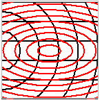

Create a hatch style
You can combine radial and linear hatch patterns to form a new style. To reduce editing time, try to pick an existing hatch style that is similar to what you want.
Use the Preview window on the Properties and Pattern tabs to see the results of your changes as you make them.
-
Choose View tab→Style group→Styles.
-
In the Style dialog box, do the following:
-
From the Style type list, select Hatch.
-
From the Styles list, select the hatch style you want to use as the basis for a new style.
-
Click New.
The Hatch Style dialog box is displayed.
-
-
In the New Hatch Style dialog box, do the following:
-
On the Name tab, type a name for the new hatch style.
-
On the Properties tab, specify the overall appearance of the hatch pattern by choosing a Pattern color, Line width, Pattern spacing, and Pattern angle.
You also can reuse the same settings as the pattern displayed in the Preview box.
-
On the Pattern tab, specify the attributes of individual elements in the new pattern by doing the following:
-
(To modify a line in the pattern) The line that is highlighted in red in the Preview window is the current element. Use the Type, Width, Spacing, and other options to adjust the appearance of the current element.
-
(To add a line to the pattern)
-
Click the Copy button.
This copies the currently selected linear or radial element shown in the Element list.
-
Specify whether you want the copied element to be linear or radial by selecting one of the following:
-
Click Linear elements to make the copied element a line.
-
Click Radial elements to make the copied element a circle or ellipse.
The element updates in the Preview pane. The new element pattern overlays the existing pattern. The current element is highlighted in red.

-
-
Use the Type, Width, Spacing, and other options to adjust the appearance of the current element pattern.
Example:You can:
-
Create tight concentric circles from a radial pattern by clicking the middle button under Center of radial pattern, and then adjusting the Spacing value to a lower number, such as 1.00.
-
Create ellipses from a radial element by specifying a Spacing value and then typing a value in the Pri/Sec axis ratio box.
-
Adjust the origin of the pattern using the Offset X, Offset Y, and Shift controls.
-
For a linear pattern, use the Angle box to change the angle of the lines.
-
-
-
-
-
On the Pattern tab, click OK.
-
In the Style dialog box, click Apply.
The new hatch style is added to the Styles list in the Style dialog box. To use the new hatch style, create a new fill style that uses it.
-
The descriptive text next to the information icon at bottom-right of the Pattern tab shows the total number of linear elements and the total number of radial elements in the current pattern.
-
You can use the Pattern angle option on the Properties tab to adjust the angle of the overall pattern.
-
You can use the Patterns tab to control each line, circle, and elliptical element in the pattern independently of the others.
-
You can edit a system defined hatch style, and you can use the Undo and Redo commands to undo and redo changes.
How do I
Create a custom line typeCreate a custom fill color
Look up more details
Custom Line Type dialog boxNew Line Style dialog box
Name tab (Style dialog box)
General tab (Line Style dialog box)
Modify Line Style dialog box
Fill Style dialog box
Name tab (Fill Style dialog box)
Properties tab (Fill Style dialog box)
Hatch Style dialog box
Name tab (Hatch Style dialog box)
Properties tab (Hatch Style dialog box)
Pattern tab (Hatch Style and Fill Style)
Attributes Tab